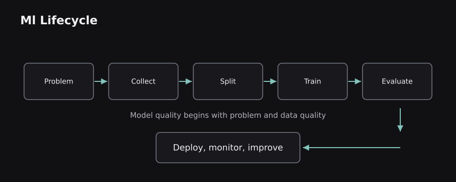
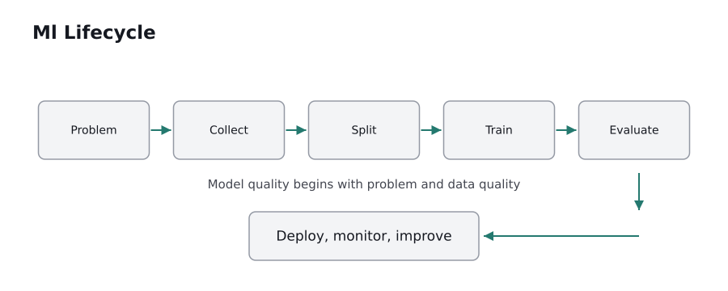
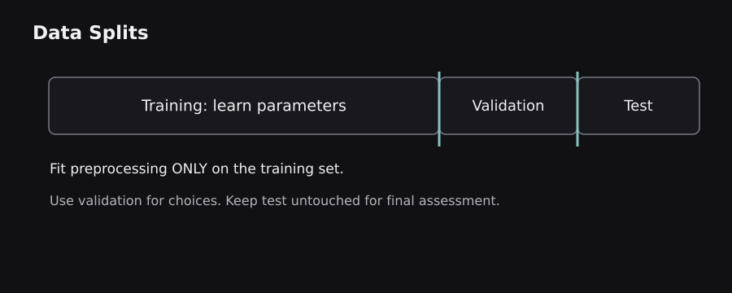
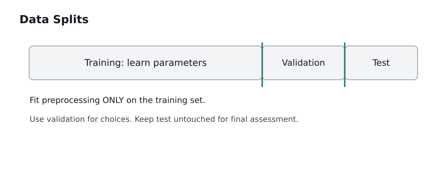

Before asking how a neural network thinks, we need a clearer question: what does it mean for any program to learn? This chapter starts with familiar examples, builds the mathematical vocabulary gently, and establishes the data workflow used throughout the blog.
1.0 — AI, machine learning, deep learning, and data science
The simplest distinction: an ordinary program follows rules written by a developer. A machine-learning program adjusts a model using examples so that its predictions improve. Artificial intelligence is the wider ambition of building systems that perform tasks associated with intelligent behavior. Machine learning (ML) is one important approach within AI. Deep learning (DL) is a family of ML methods built with multi-layer neural networks. Data science overlaps with these areas but also covers collecting, querying, describing, and interpreting data without necessarily training predictive models.
Consider a spam filter. A hand-written rule could say that every email containing “FREE MONEY” is spam. Real spam constantly changes its wording, so fixed rules become brittle. An ML filter learns statistical associations between many features of an email and spam labels. A neural model can learn much of its own representation of text. Neither approach truly “understands” mail the way a person does; both estimate useful patterns from data.
Three separate questions keep terminology clear: (1) What behavior do we want? That is the AI problem. (2) What evidence will shape predictions? That is the ML problem. (3) What model family will represent the pattern? A deep network is one possible answer. Building a dataset and measuring its limitations is part of data science across all three.
Analogy: a conventional calculator follows a recipe; a learner adjusts the recipe after seeing many worked examples. The analogy stops where learning becomes statistical: there may be many plausible rules, and a trained rule may fail on unfamiliar data.
1.1 — The complete learning pipeline
A real ML system does not start with model.fit(). It starts with a decision and an operational definition of success. Imagine a delivery company trying to predict whether a package will arrive late. The workflow is define the target → collect historical events → clean and split data → choose representation → train → validate → test → deploy → monitor.
The target might be late = 1 when arrival exceeds a promised time, otherwise 0. Inputs could be route, distance, weather, dispatch hour, and warehouse load. Each input must be available at prediction time. Actual arrival timestamp is not a valid input because it is only known afterward. This is a classic source of data leakage.
Training means estimating adjustable parameters from the training data. Validation means comparing candidates or selecting settings without looking at the final test answers. Testing means making a final, held-out estimate of how the selected system generalizes. Deployment means integrating the model into a product; monitoring means checking whether real-world behavior continues to match the evaluation assumptions.
Why this matters: excellent training accuracy cannot rescue the wrong target, incomplete labels, unrealistic evaluation split, or an application that never checks failures. A predictive model is one component of an end-to-end decision system, not the entire system.
 
1.2 — Samples, features, labels, and predictions
An ML dataset can be pictured as a spreadsheet. One row is a sample (an observation). Columns describing the row are features. A label or target is the answer we want the model to predict. If there are m examples and n numeric features, we often write the feature matrix as X with shape (m, n) and targets as y with shape (m,) for one scalar target per example.
For a house-price model, features might be floor area, age, distance to a railway station, and number of rooms. Price is the target. The model implements a function ŷ = f(X), where the hat signals that ŷ is an estimate rather than the known answer y. A parameter is learned from examples, whereas a hyperparameter controls the learning process, such as tree depth or learning rate.
Concrete example: for [area=900, rooms=2, age=8], a trained model could output an illustrative predicted price of ₹48 lakh. The number is not a guaranteed market price; it is the model's estimate conditional on the patterns in its training examples.
Key distinctions: labels are not always trustworthy, numeric features are not automatically comparable in scale, and a categorical location cannot be treated as a meaningful numerical order merely because we replace each place name with a number. Feature meaning matters as much as feature format.
1.3 — Supervised, unsupervised, and reinforcement learning
Supervised learning uses examples with targets. The model sees both the question and a reference answer during training. Predicting a continuous quantity is regression; predicting one of several classes is classification. House price is regression. Spam/not-spam is classification. A spam classifier may produce a probability such as 0.83 before a threshold converts it to a class.
Unsupervised learning usually starts without a label for each example. Clustering looks for groups with similar features; dimensionality reduction finds a smaller representation that preserves useful structure. Customer groups discovered through clustering are patterns chosen by an algorithm, not necessarily objective human categories.
Reinforcement learning (RL) instead uses interactions. An agent chooses an action, the environment changes, and a reward signal evaluates the outcome. A game-playing agent can learn a policy for choosing moves. This is not the same as repeatedly guessing spreadsheet labels: actions influence future observations, and good short-term reward can conflict with good long-term decisions.
Mental model: supervised learning is learning from answer keys; unsupervised learning is organizing an uncatalogued library; RL is learning a strategy through feedback. The parallels are useful, but real algorithms learn statistical structures rather than reasoning exactly as a student, librarian, or athlete would.
1.4 — Essential mathematics without the fear
Four mathematical objects appear constantly: scalars, vectors, matrices, and tensors. A scalar is one number, such as temperature 28. A vector is an ordered list, such as [distance, traffic, rain]. A matrix is a table of numbers. A tensor is a general multidimensional array; for example, a batch of color images can have shape (batch, height, width, channels).
A weighted sum gives each input a level of influence: z = w₁x₁ + w₂x₂ + b. If x₁=2, x₂=3, w₁=4, w₂=1, and b=−2, then z=9. The same operation for many inputs is written z = w·x + b; across batches it becomes matrix multiplication. This compact notation is not decoration: processors can compute many operations together efficiently.
A function maps inputs to outputs. A derivative tells us how sensitive an output is to a small input change. The chain rule combines sensitivities across several functions, which later makes neural-network backpropagation possible. A probability lies between 0 and 1, but a model output in that range is not automatically calibrated to actual frequencies.
Analogy: weights resemble knobs on an audio mixer. Turning one knob changes its contribution to the mix. Unlike a real mixer, an ML training algorithm can adjust thousands or billions of knobs automatically according to a numerical error signal.
1.5 — Python, arrays, and the meaning of shape
Python is common in ML because NumPy provides fast numerical arrays, pandas works with tabular data, scikit-learn provides traditional ML estimators, and PyTorch provides tensor operations and automatic differentiation. The important beginner skill is to understand what a line computes, not memorize library names.
import numpy as np
X = np.array([[900, 2], [1200, 3], [1500, 3]])
weights = np.array([0.04, 5.0])
predictions = X @ weights + 10
print(X.shape, predictions.shape)
# (3, 2) (3,)
Here X holds three houses and two features per house. @ computes matrix-vector multiplication. For the first house, the illustrative formula yields 900×0.04 + 2×5 + 10 = 56. The units and coefficients are invented to show computation, not fit from real property data. If features have radically different units, preprocessing can become important for learning.
Shape errors are common: (3,2) means three observations with two features; (2,3) means something different. Later, attention layers use three-dimensional tensor shapes, so treating shape as part of the data's meaning is essential.
1.6 — Where training data comes from, and what can go wrong
Training examples may come from databases, sensors, application events, documents, public datasets, or human annotations. Collection defines the world the model sees. A road-traffic model trained only during sunny weekdays may look accurate during evaluation but fail during festivals or storms. This is a distribution mismatch between training examples and actual use.
Different flaws require different responses. Missing values may reflect a broken sensor or a legitimate absence. Duplicate rows can cause near-identical records to appear in both train and test sets. Outliers may be mistakes or genuinely rare important events. Noisy labels mean the target itself is unreliable. Selection bias occurs when collected samples systematically omit certain cases.
Concrete example: suppose 95% of surveyed customers are urban, but the intended product serves the entire country. A model trained only on the survey may not generalize to rural customers. More records from the same biased source do not necessarily fix the coverage problem.
Good dataset documentation records where examples came from, which transformations were applied, which populations may be underrepresented, and which uses are inappropriate. Ethical and privacy questions are not separate from quality: unjustified personal-data collection also increases legal and operational risk.
1.7 — Training, validation, test sets, and data leakage
A model learns patterns from its training split. A validation split guides algorithm selection and hyperparameter choices. The test split should remain untouched until the design is essentially fixed. Otherwise repeated decisions based on test results turn the test set into another hidden training signal and make performance estimates overoptimistic.
Random splitting often works for independent, identically distributed observations, but it is not universally valid. For a time-series forecast, training on future events and testing on past events gives away information unavailable in deployment. For patient-level records, examples from the same patient can cause leakage across splits. For documents, duplicates and near-duplicates can create an equally misleading test.
Example: 10,000 historical deliveries might be split chronologically: older events to train, later events to validate, newest events to test. Feature transformations such as scaling or missing-value imputation must be fit only on training data, then applied to validation and test. Computing normalization statistics from all 10,000 rows leaks future distribution information.
 
1.8 — Loss functions, optimization, and generalization
A loss function converts a prediction error into a number we can minimize. Regression often uses mean squared error: average of (prediction − actual)². Squaring prevents positive and negative errors from cancelling, and it penalizes large misses strongly. Classification often uses cross-entropy, which penalizes assigning low probability to the correct class.
Training attempts to find parameters with low average loss on examples. However, generalization means working on new observations, not memorizing the training set. A model that perfectly stores every training label but fails on new cases has overfit. A model too rigid to capture meaningful patterns has underfit. Good validation design and appropriate model complexity help find the balance.
Illustrative example: model A has training accuracy 99% but test accuracy 65%; model B has training accuracy 89% and test accuracy 87%. For deployment, B is generally the stronger candidate on these metrics, assuming both tests represent the intended population. The 99% figure alone tells us little.
Analogy: learning only the exact questions from a study guide may produce great practice results but weak transfer. The analogy breaks because some data is inherently noisy and no model can be perfect; the relevant goal is reliable performance on an explicitly defined distribution.
1.9 — From a model to a reliable decision
Model output is not a product decision. Suppose a fraud detector produces P(fraud)=0.7. A payment service must decide whether to block, verify, or allow a transaction. Those actions have different costs: a false alarm frustrates a legitimate customer, while a missed fraud may cause loss. A probability threshold is therefore a business and risk decision, not an intrinsic property of the model.
A responsible pipeline records the model version, evaluation dataset, data schema, prediction latency, and known limitations. It watches for data drift (input distributions change), concept drift (the relationship between inputs and targets changes), and service failures. Models sometimes need retraining, but retraining without investigating the cause can amplify a problem.
Chapter synthesis: we now know what samples, features, targets, parameters, loss, splits, leakage, and generalization mean. The next step is to understand traditional algorithms that learn useful patterns with far less complexity than a modern neural network.
Sources and further reading
These sources supplement the original explanations. The uploaded PDFs and cheatsheets informed the topic coverage; their illustrations and prose are not republished.